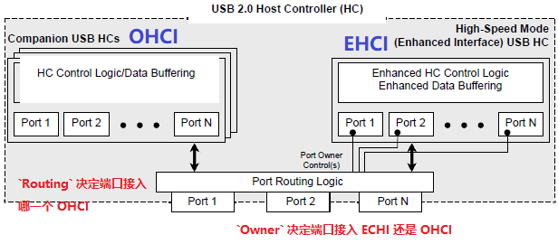
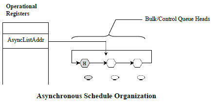
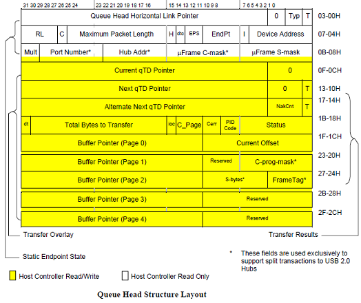
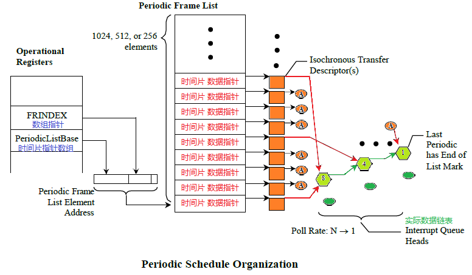
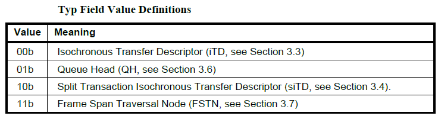
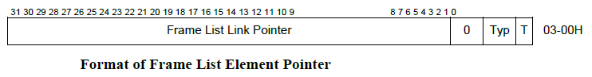
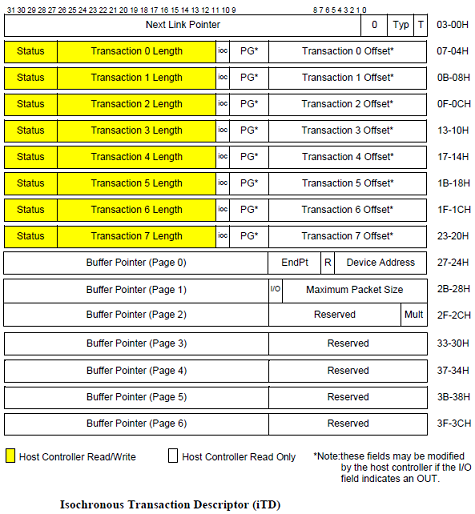

7.12.5. USB Host 子系统代码架构¶
整个 USB 系统的通讯模型如上图所示，Host 框架见左侧彩图部分。
7.12.5.1. USB Core¶
7.12.5.1.1. Layer¶

由前几节可知USB将 Device 进一步细分成了3个层级： Configuration 配置、 Interface 接口、 Endpoint 端点。
USB Core 为其中两个层次提供了 Device + Driver 的设备驱动模型，这两个层次分别是 USB Device Layer 和 USB Interface Layer 层，一个 USB Device 包含一个或多个 USB Interface。其中：
USB Device Layer层。这一层的Device由Hub创建，Hub本身也是一种USB Device；这一层的Driver完成的功能非常简单，基本就是帮USB Device创建其包含的所有子USB Interface的Device，大部分场景下都是使用usb_generic_driver。USB Interface Layer层。这一层的Device由上一级USB Device在驱动 probe() 时创建；而这一层的Driver就是普通的业务 Usb 驱动，即 Usb 协议中所说的Client Software。
7.12.5.1.2. URB (USB Request Block)¶

USB Core 除了提供上一节描述的设备驱动模型以外，另一个重要的作用就是要给 USB Interface Driver 提供读写 USB 数据的 API，这一任务是围绕着 USB Request Block 来完成的。
USB Interface Driver 适配成功以后，会从配置信息中获取到当前 Interface 包含了多少个 Endpoint ，以及每个 Endpoint 的地址、传输类型、最大包长等其他信息。 Endpoint 是 USB 总线传输中最小的 寻址单位 ，Interface Driver 利用对几个 Endpoint 的读写来驱动具体的设备功能。
对某个 Endpoint 发起一次读写操作，具体工作使用 struct urb 数据结构来承担。
以下是一个对 Endpoint 0 使用 urb 发起读写的一个简单实例：
static int usb_internal_control_msg(struct usb_device *usb_dev,
unsigned int pipe,
struct usb_ctrlrequest *cmd,
void *data, int len, int timeout)
{
struct urb *urb;
int retv;
int length;
/* (1) 分配一个 urb 内存空间 */
urb = usb_alloc_urb(0, GFP_NOIO);
if (!urb)
return -ENOMEM;
/* (2) 填充 urb 内容，最核心的有3方面：
1、总线地址：Device Num + Endpoint Num
2、数据：data + len
3、回调函数：usb_api_blocking_completion
*/
usb_fill_control_urb(urb, usb_dev, pipe, (unsigned char *)cmd, data,
len, usb_api_blocking_completion, NULL);
/* (3) 发送 urb 请求，并且等待请求完成 */
retv = usb_start_wait_urb(urb, timeout, &length);
if (retv < 0)
return retv;
else
return length;
}
↓
static int usb_start_wait_urb(struct urb *urb, int timeout, int *actual_length)
{
struct api_context ctx;
unsigned long expire;
int retval;
init_completion(&ctx.done);
urb->context = &ctx;
urb->actual_length = 0;
/* (3.1) 把 urb 请求挂载到 hcd 的队列当中 */
retval = usb_submit_urb(urb, GFP_NOIO);
if (unlikely(retval))
goto out;
expire = timeout ? msecs_to_jiffies(timeout) : MAX_SCHEDULE_TIMEOUT;
/* (3.2) 当 urb 执行完成后，首先会调用 urb 的回调函数，然后会发送 completion 信号解除这里的阻塞 */
if (!wait_for_completion_timeout(&ctx.done, expire)) {
usb_kill_urb(urb);
retval = (ctx.status == -ENOENT ? -ETIMEDOUT : ctx.status);
dev_dbg(&urb->dev->dev,
"%s timed out on ep%d%s len=%u/%u\n",
current->comm,
usb_endpoint_num(&urb->ep->desc),
usb_urb_dir_in(urb) ? "in" : "out",
urb->actual_length,
urb->transfer_buffer_length);
} else
retval = ctx.status;
out:
if (actual_length)
*actual_length = urb->actual_length;
usb_free_urb(urb);
return retval;
}
7.12.5.1.2.1. Normal Device urb_enqueue¶
对普通的 Usb device 来说，urb 最后会提交到 Host Controller 的收发队列上面，由 HC 完成实际的 USB 传输：
usb_submit_urb() → usb_hcd_submit_urb():
int usb_hcd_submit_urb (struct urb *urb, gfp_t mem_flags)
{
/* (1) 如果是 roothub 走特殊的路径 */
if (is_root_hub(urb->dev)) {
status = rh_urb_enqueue(hcd, urb);
/* (2) 如果是普通 device 调用对应的 hcd 的 urb_enqueue() 函数 */
} else {
status = map_urb_for_dma(hcd, urb, mem_flags);
if (likely(status == 0)) {
status = hcd->driver->urb_enqueue(hcd, urb, mem_flags);
if (unlikely(status))
unmap_urb_for_dma(hcd, urb);
}
}
}
7.12.5.1.2.2. Roothub Device urb_enqueue¶
特别需要注意的是 roothub 它是一个虚拟的 usb device，实际上它并不在usb总线上而是在 host 内部，所以相应的 urb 需要特殊处理，而不能使用 hcd 把数据发送到 Usb 总线上去。
usb_submit_urb() → usb_hcd_submit_urb() → rh_urb_enqueue():
static int rh_urb_enqueue (struct usb_hcd *hcd, struct urb *urb)
{
/* (1) 对于 int 类型的数据，被挂载到 hcd->status_urb 指针上面
通常 roothub 驱动用这个 urb 来查询 roothub 的端口状态
*/
if (usb_endpoint_xfer_int(&urb->ep->desc))
return rh_queue_status (hcd, urb);
/* (2) 对于 control 类型的数据，是想读取 roothub ep0 上的配置信息
使用软件来模拟这类操作的响应
*/
if (usb_endpoint_xfer_control(&urb->ep->desc))
return rh_call_control (hcd, urb);
return -EINVAL;
}
|→
static int rh_queue_status (struct usb_hcd *hcd, struct urb *urb)
{
/* (1.1) 将 urb 挂载到对应的 ep 链表中 */
retval = usb_hcd_link_urb_to_ep(hcd, urb);
if (retval)
goto done;
/* (1.2) 将 urb 赋值给 hcd->status_urb
在 hcd 驱动中，会通过这些接口来通知 roothub 的端口状态变化
*/
hcd->status_urb = urb;
urb->hcpriv = hcd; /* indicate it's queued */
if (!hcd->uses_new_polling)
mod_timer(&hcd->rh_timer, (jiffies/(HZ/4) + 1) * (HZ/4));
}
|→
static int rh_call_control (struct usb_hcd *hcd, struct urb *urb)
{
/* (2.1) 软件模拟对 roothub 配置读写的响应 */
}
7.12.5.2. USB Device Layer¶
7.12.5.2.1. Device (struct usb_device)¶
USB Device Device 对应的数据结构为 struct usb_device ，会在两种情况下被创建：
roothub device。在 HCD 驱动注册时创建：
/* (1) 首先创建和初始化 `usb_device` 结构： */
usb_add_hcd() → usb_alloc_dev():
struct usb_device *usb_alloc_dev(struct usb_device *parent,
struct usb_bus *bus, unsigned port1)
{
/* (1.1) dev 总线初始化为 usb_bus_type */
dev->dev.bus = &usb_bus_type;
/* (1.2) dev 类型初始化为 usb_device_type，标明自己是一个 usb device */
dev->dev.type = &usb_device_type;
dev->dev.groups = usb_device_groups;
}
/* (2) 然后注册 `usb_device` 结构： */
usb_add_hcd() → register_root_hub() → usb_new_device() → device_add()
普通 usb device。在 Hub 检测到端口有设备 attach 时创建：
/* (1) 首先创建和初始化 `usb_device` 结构： */
hub_event() → port_event() → hub_port_connect_change() → hub_port_connect() → usb_alloc_dev()
/* (2) 然后注册 `usb_device` 结构： */
hub_event() → port_event() → hub_port_connect_change() → hub_port_connect() → usb_new_device() → device_add()
7.12.5.2.2. Driver (struct usb_device_driver)¶
USB Device Driver 对应的数据结构为 struct usb_device_driver，使用 usb_register_device_driver() 函数进行注册：
int usb_register_device_driver(struct usb_device_driver *new_udriver,
struct module *owner)
{
/* (1) 设置for_devices标志为1，表面这个驱动时给 usb device 使用的 */
new_udriver->drvwrap.for_devices = 1;
new_udriver->drvwrap.driver.name = new_udriver->name;
new_udriver->drvwrap.driver.bus = &usb_bus_type;
new_udriver->drvwrap.driver.probe = usb_probe_device;
new_udriver->drvwrap.driver.remove = usb_unbind_device;
new_udriver->drvwrap.driver.owner = owner;
new_udriver->drvwrap.driver.dev_groups = new_udriver->dev_groups;
retval = driver_register(&new_udriver->drvwrap.driver);
}
注册的 USB Device Driver 驱动非常少，一般情况下所有的 USB Device Device 都会适配到 usb_generic_driver。因为这一层次驱动的目的很单纯，就是给 USB Device 下所有的 Interface 创建对应的 USB Interface Device。
usb_init() → usb_register_device_driver() :
static int __init usb_init(void)
{
retval = usb_register_device_driver(&usb_generic_driver, THIS_MODULE);
}
struct usb_device_driver usb_generic_driver = {
.name = "usb",
.match = usb_generic_driver_match,
.probe = usb_generic_driver_probe,
.disconnect = usb_generic_driver_disconnect,
#ifdef CONFIG_PM
.suspend = usb_generic_driver_suspend,
.resume = usb_generic_driver_resume,
#endif
.supports_autosuspend = 1,
};
驱动 probe() 过程：
usb_probe_device() → usb_generic_driver_probe() → usb_set_configuration():
int usb_set_configuration(struct usb_device *dev, int configuration)
{
/* (1) 创建和初始化 `struct usb_interface` */
for (i = 0; i < nintf; ++i) {
/* (1.1) dev 总线初始化为 usb_bus_type */
intf->dev.bus = &usb_bus_type;
/* (1.2) dev 类型初始化为 usb_if_device_type，标明自己是一个 usb interface */
intf->dev.type = &usb_if_device_type;
intf->dev.groups = usb_interface_groups;
}
/* (2) 注册 `struct usb_interface` */
for (i = 0; i < nintf; ++i) {
ret = device_add(&intf->dev);
}
}
7.12.5.2.3. Bus (usb_bus_type)¶
可以看到 struct usb_device 和 struct usb_interface 使用的总线都是 usb_bus_type。他们是通过字段 dev.type 来区分的：
/* (1) `struct usb_device` 的 `dev.type` 值为 `usb_device_type`： */
usb_add_hcd() → usb_alloc_dev():
struct usb_device *usb_alloc_dev(struct usb_device *parent,
struct usb_bus *bus, unsigned port1)
{
dev->dev.type = &usb_device_type;
}
/* (2) `struct usb_interface` 的 `dev.type` 值为 `usb_if_device_type` */
usb_probe_device() → usb_generic_driver_probe() → usb_set_configuration():
int usb_set_configuration(struct usb_device *dev, int configuration)
{
for (i = 0; i < nintf; ++i) {
intf->dev.type = &usb_if_device_type;
}
}
static inline int is_usb_device(const struct device *dev)
{
/* (3) 判断当前 Device 是否为 Usb Device */
return dev->type == &usb_device_type;
}
static inline int is_usb_interface(const struct device *dev)
{
/* (4) 判断当前 Device 是否为 Usb Interface */
return dev->type == &usb_if_device_type;
}
另外 struct usb_device_driver 和 struct usb_driver 使用的总线都是 usb_bus_type。他们是通过字段 drvwrap.for_devices 来区分的：
/* (1) `struct usb_device_driver` 的 `drvwrap.for_devices` 值为 1： */
int usb_register_device_driver(struct usb_device_driver *new_udriver,
struct module *owner)
{
new_udriver->drvwrap.for_devices = 1;
}
/* (2) `struct usb_driver` 的 `drvwrap.for_devices` 值为 0： */
int usb_register_driver(struct usb_driver *new_driver, struct module *owner,
const char *mod_name)
{
new_driver->drvwrap.for_devices = 0;
}
/* (3) 判断当前 Driver 是适配 Usb Device 还是 Usb Interface */
static inline int is_usb_device_driver(struct device_driver *drv)
{
return container_of(drv, struct usbdrv_wrap, driver)->
for_devices;
}
在 usb_bus_type 的 match() 函数中利用 dev.type 进行判别分开处理：
struct bus_type usb_bus_type = {
.name = "usb",
.match = usb_device_match,
.uevent = usb_uevent,
.need_parent_lock = true,
};
static int usb_device_match(struct device *dev, struct device_driver *drv)
{
/* devices and interfaces are handled separately */
/* (1) Device 是 `Usb Device` 的处理 */
if (is_usb_device(dev)) {
struct usb_device *udev;
struct usb_device_driver *udrv;
/* interface drivers never match devices */
/* (1.1) 只查找 `Usb Device` 的 Driver */
if (!is_usb_device_driver(drv))
return 0;
udev = to_usb_device(dev);
udrv = to_usb_device_driver(drv);
/* If the device driver under consideration does not have a
* id_table or a match function, then let the driver's probe
* function decide.
*/
if (!udrv->id_table && !udrv->match)
return 1;
return usb_driver_applicable(udev, udrv);
/* (2) Device 是 `Usb Interface` 的处理 */
} else if (is_usb_interface(dev)) {
struct usb_interface *intf;
struct usb_driver *usb_drv;
const struct usb_device_id *id;
/* device drivers never match interfaces */
/* (2.1) 只查找 `Usb Interface` 的 Driver */
if (is_usb_device_driver(drv))
return 0;
intf = to_usb_interface(dev);
usb_drv = to_usb_driver(drv);
id = usb_match_id(intf, usb_drv->id_table);
if (id)
return 1;
id = usb_match_dynamic_id(intf, usb_drv);
if (id)
return 1;
}
return 0;
}
7.12.5.3. USB Interface Layer¶
7.12.5.3.1. Device (struct usb_interface)¶
如上一节描述， USB Interface Device 对应的数据结构为 struct usb_interface ，会在 USB Device Driver 驱动 probe() 时 被创建：
usb_probe_device() → usb_generic_driver_probe() → usb_set_configuration():
int usb_set_configuration(struct usb_device *dev, int configuration)
{
/* (1) 创建和初始化 `struct usb_interface` */
for (i = 0; i < nintf; ++i) {
/* (1.1) dev 总线初始化为 usb_bus_type */
intf->dev.bus = &usb_bus_type;
/* (1.2) dev 类型初始化为 usb_if_device_type，标明自己是一个 usb interface */
intf->dev.type = &usb_if_device_type;
intf->dev.groups = usb_interface_groups;
}
/* (2) 注册 `struct usb_interface` */
for (i = 0; i < nintf; ++i) {
ret = device_add(&intf->dev);
}
}
7.12.5.3.2. Driver (struct usb_driver)¶
USB Interface 这一层次的驱动就非常的多了，这一层主要是在 USB 传输层之上，针对 USB Device 的某个功能 Function 开发对应的 USB 功能业务驱动，即常说的 USB Client Software。在 USB 定义中，一个 Interface 就是一个 Function。
USB Interface Driver 对应的数据结构为 struct usb_driver ，使用 usb_register_driver() 函数进行注册：
int usb_register_driver(struct usb_driver *new_driver, struct module *owner,
const char *mod_name)
{
/* (1) 设置for_devices标志为0，表面这个驱动时给 usb interface 使用的 */
new_driver->drvwrap.for_devices = 0;
new_driver->drvwrap.driver.name = new_driver->name;
new_driver->drvwrap.driver.bus = &usb_bus_type;
new_driver->drvwrap.driver.probe = usb_probe_interface;
new_driver->drvwrap.driver.remove = usb_unbind_interface;
new_driver->drvwrap.driver.owner = owner;
new_driver->drvwrap.driver.mod_name = mod_name;
new_driver->drvwrap.driver.dev_groups = new_driver->dev_groups;
spin_lock_init(&new_driver->dynids.lock);
INIT_LIST_HEAD(&new_driver->dynids.list);
retval = driver_register(&new_driver->drvwrap.driver);
}
一个最简单的 Usb Interface Driver 是 usb_mouse_driver :
static const struct usb_device_id usb_mouse_id_table[] = {
{ USB_INTERFACE_INFO(USB_INTERFACE_CLASS_HID, USB_INTERFACE_SUBCLASS_BOOT,
USB_INTERFACE_PROTOCOL_MOUSE) },
{ } /* Terminating entry */
};
MODULE_DEVICE_TABLE (usb, usb_mouse_id_table);
static struct usb_driver usb_mouse_driver = {
.name = "usbmouse",
.probe = usb_mouse_probe,
.disconnect = usb_mouse_disconnect,
.id_table = usb_mouse_id_table,
};
module_usb_driver(usb_mouse_driver);
首先根据得到的 endpoint 准备好 urb，创建好 input 设备：
static int usb_mouse_probe(struct usb_interface *intf, const struct usb_device_id *id)
{
struct usb_device *dev = interface_to_usbdev(intf);
struct usb_host_interface *interface;
struct usb_endpoint_descriptor *endpoint;
struct usb_mouse *mouse;
struct input_dev *input_dev;
int pipe, maxp;
int error = -ENOMEM;
interface = intf->cur_altsetting;
if (interface->desc.bNumEndpoints != 1)
return -ENODEV;
/* (1) 得到当前 interface 中的第一个 endpoint，mouse设备只需一个 endpoint */
endpoint = &interface->endpoint[0].desc;
if (!usb_endpoint_is_int_in(endpoint))
return -ENODEV;
pipe = usb_rcvintpipe(dev, endpoint->bEndpointAddress);
maxp = usb_maxpacket(dev, pipe, usb_pipeout(pipe));
mouse = kzalloc(sizeof(struct usb_mouse), GFP_KERNEL);
/* (2.1) 分配 input device */
input_dev = input_allocate_device();
if (!mouse || !input_dev)
goto fail1;
mouse->data = usb_alloc_coherent(dev, 8, GFP_ATOMIC, &mouse->data_dma);
if (!mouse->data)
goto fail1;
/* (3.1) 分配 urb */
mouse->irq = usb_alloc_urb(0, GFP_KERNEL);
if (!mouse->irq)
goto fail2;
mouse->usbdev = dev;
mouse->dev = input_dev;
if (dev->manufacturer)
strlcpy(mouse->name, dev->manufacturer, sizeof(mouse->name));
if (dev->product) {
if (dev->manufacturer)
strlcat(mouse->name, " ", sizeof(mouse->name));
strlcat(mouse->name, dev->product, sizeof(mouse->name));
}
if (!strlen(mouse->name))
snprintf(mouse->name, sizeof(mouse->name),
"USB HIDBP Mouse %04x:%04x",
le16_to_cpu(dev->descriptor.idVendor),
le16_to_cpu(dev->descriptor.idProduct));
usb_make_path(dev, mouse->phys, sizeof(mouse->phys));
strlcat(mouse->phys, "/input0", sizeof(mouse->phys));
/* (2.2) 初始化 input device */
input_dev->name = mouse->name;
input_dev->phys = mouse->phys;
usb_to_input_id(dev, &input_dev->id);
input_dev->dev.parent = &intf->dev;
input_dev->evbit[0] = BIT_MASK(EV_KEY) | BIT_MASK(EV_REL);
input_dev->keybit[BIT_WORD(BTN_MOUSE)] = BIT_MASK(BTN_LEFT) |
BIT_MASK(BTN_RIGHT) | BIT_MASK(BTN_MIDDLE);
input_dev->relbit[0] = BIT_MASK(REL_X) | BIT_MASK(REL_Y);
input_dev->keybit[BIT_WORD(BTN_MOUSE)] |= BIT_MASK(BTN_SIDE) |
BIT_MASK(BTN_EXTRA);
input_dev->relbit[0] |= BIT_MASK(REL_WHEEL);
input_set_drvdata(input_dev, mouse);
input_dev->open = usb_mouse_open;
input_dev->close = usb_mouse_close;
/* (3.2) 初始化 urb */
usb_fill_int_urb(mouse->irq, dev, pipe, mouse->data,
(maxp > 8 ? 8 : maxp),
usb_mouse_irq, mouse, endpoint->bInterval);
mouse->irq->transfer_dma = mouse->data_dma;
mouse->irq->transfer_flags |= URB_NO_TRANSFER_DMA_MAP;
/* (2.3) 注册 input device */
error = input_register_device(mouse->dev);
if (error)
goto fail3;
usb_set_intfdata(intf, mouse);
return 0;
fail3:
usb_free_urb(mouse->irq);
fail2:
usb_free_coherent(dev, 8, mouse->data, mouse->data_dma);
fail1:
input_free_device(input_dev);
kfree(mouse);
return error;
}
在 input device 被 open 时提交 urb 启动传输：
static int usb_mouse_open(struct input_dev *dev)
{
struct usb_mouse *mouse = input_get_drvdata(dev);
mouse->irq->dev = mouse->usbdev;
/* (1) 提交初始化好的 usb，开始查询数据 */
if (usb_submit_urb(mouse->irq, GFP_KERNEL))
return -EIO;
return 0;
}
在传输完 urb 的回调函数中，根据读回的数据上报 input 事件，并且重新提交 urb 继续查询：
static void usb_mouse_irq(struct urb *urb)
{
struct usb_mouse *mouse = urb->context;
signed char *data = mouse->data;
struct input_dev *dev = mouse->dev;
int status;
switch (urb->status) {
case 0: /* success */
break;
case -ECONNRESET: /* unlink */
case -ENOENT:
case -ESHUTDOWN:
return;
/* -EPIPE: should clear the halt */
default: /* error */
goto resubmit;
}
/* (1) 根据 urb 读回的数据，上报 input event */
input_report_key(dev, BTN_LEFT, data[0] & 0x01);
input_report_key(dev, BTN_RIGHT, data[0] & 0x02);
input_report_key(dev, BTN_MIDDLE, data[0] & 0x04);
input_report_key(dev, BTN_SIDE, data[0] & 0x08);
input_report_key(dev, BTN_EXTRA, data[0] & 0x10);
input_report_rel(dev, REL_X, data[1]);
input_report_rel(dev, REL_Y, data[2]);
input_report_rel(dev, REL_WHEEL, data[3]);
input_sync(dev);
resubmit:
/* (2) 重新提交 urb 继续查询 */
status = usb_submit_urb (urb, GFP_ATOMIC);
if (status)
dev_err(&mouse->usbdev->dev,
"can't resubmit intr, %s-%s/input0, status %d\n",
mouse->usbdev->bus->bus_name,
mouse->usbdev->devpath, status);
}
7.12.5.3.3. USB Hub Driver¶
普通的 Usb Device 通过内部的 Interface 提供各种业务功能。而 Hub 这类特殊的 Usb Device 功能就一种，那就是监控端口的状态变化：
在端口上有设备 attach 时，创建新的 usb device，给其适配驱动。如果是 hub device，子 usb 驱动会进一步扫描端口。
在端口上有设备 deattach 时，移除掉对应的 usb device。如果是 hub device 进一步移除其所有的子 usb device。
Hub 也是标准的 Usb Device，它也是标准的流程被上一级设备发现后 创建 Usb Device → 创建 Usb Interface ，然后被 Usb Hub Interface Driver 给适配到。系统中只有一个 Hub 驱动：
static const struct usb_device_id hub_id_table[] = {
{ .match_flags = USB_DEVICE_ID_MATCH_VENDOR
| USB_DEVICE_ID_MATCH_PRODUCT
| USB_DEVICE_ID_MATCH_INT_CLASS,
.idVendor = USB_VENDOR_SMSC,
.idProduct = USB_PRODUCT_USB5534B,
.bInterfaceClass = USB_CLASS_HUB,
.driver_info = HUB_QUIRK_DISABLE_AUTOSUSPEND},
{ .match_flags = USB_DEVICE_ID_MATCH_VENDOR
| USB_DEVICE_ID_MATCH_INT_CLASS,
.idVendor = USB_VENDOR_GENESYS_LOGIC,
.bInterfaceClass = USB_CLASS_HUB,
.driver_info = HUB_QUIRK_CHECK_PORT_AUTOSUSPEND},
{ .match_flags = USB_DEVICE_ID_MATCH_DEV_CLASS,
.bDeviceClass = USB_CLASS_HUB},
{ .match_flags = USB_DEVICE_ID_MATCH_INT_CLASS,
.bInterfaceClass = USB_CLASS_HUB},
{ } /* Terminating entry */
};
MODULE_DEVICE_TABLE(usb, hub_id_table);
static struct usb_driver hub_driver = {
.name = "hub",
.probe = hub_probe,
.disconnect = hub_disconnect,
.suspend = hub_suspend,
.resume = hub_resume,
.reset_resume = hub_reset_resume,
.pre_reset = hub_pre_reset,
.post_reset = hub_post_reset,
.unlocked_ioctl = hub_ioctl,
.id_table = hub_id_table,
.supports_autosuspend = 1,
};
hub_driver 驱动启动以后，只做一件事情发送一个查询端口状态的 urb ：
hub_probe() → hub_configure():
static int hub_configure(struct usb_hub *hub,
struct usb_endpoint_descriptor *endpoint)
{
/* (1) 分配 urb */
hub->urb = usb_alloc_urb(0, GFP_KERNEL);
if (!hub->urb) {
ret = -ENOMEM;
goto fail;
}
/* (2) 初始化 urb，作用就是通过 ep0 查询 hub 的端口状态
urb 的回调函数是 hub_irq()
*/
usb_fill_int_urb(hub->urb, hdev, pipe, *hub->buffer, maxp, hub_irq,
hub, endpoint->bInterval);
/* (3) 发送 urb */
hub_activate(hub, HUB_INIT);
}
↓
static void hub_activate(struct usb_hub *hub, enum hub_activation_type type)
{
/* (3.1) 提交 urb */
status = usb_submit_urb(hub->urb, GFP_NOIO);
}
7.12.5.3.3.1. Normal Hub Port op¶
在普通的 hub 中，端口操作是通过标准的 urb 发起 usb ep0 读写。分为两类：
通过轮询读取 Hub Class-specific Requests 配置来查询端口的状态：
设置和使能端口也是通过 Hub Class-specific Requests 中相应的命令实现的：
7.12.5.3.3.2. RootHub Port op¶
而对于 roothub 来说，对端口的操作的 urb 都需要特殊处理 (以 EHCI 的驱动为例)：
端口状态的变化可以通过 HCD 触发中断再上报：
ehci_irq() → usb_hcd_poll_rh_status() :
void usb_hcd_poll_rh_status(struct usb_hcd *hcd)
{
/* (1) 获取端口状态的变化 */
length = hcd->driver->hub_status_data(hcd, buffer);
if (length > 0) {
/* try to complete the status urb */
spin_lock_irqsave(&hcd_root_hub_lock, flags);
/* (2) 通过回复 hcd->status_urb 来进行上报 */
urb = hcd->status_urb;
if (urb) {
clear_bit(HCD_FLAG_POLL_PENDING, &hcd->flags);
hcd->status_urb = NULL;
urb->actual_length = length;
memcpy(urb->transfer_buffer, buffer, length);
usb_hcd_unlink_urb_from_ep(hcd, urb);
usb_hcd_giveback_urb(hcd, urb, 0);
} else {
length = 0;
set_bit(HCD_FLAG_POLL_PENDING, &hcd->flags);
}
spin_unlock_irqrestore(&hcd_root_hub_lock, flags);
}
}
↓
hcd->driver->hub_status_data() → ehci_hub_status_data():
static int
ehci_hub_status_data (struct usb_hcd *hcd, char *buf)
{
/* (1.1) 通过 HCD 驱动，获取 roothub 端口的状态 */
}
设置和使能端口需要嫁接到 HCD 驱动相关函数上实现：
usb_hcd_submit_urb() → rh_urb_enqueue() → rh_call_control() → hcd->driver->hub_control() → ehci_hub_control():
int ehci_hub_control(
struct usb_hcd *hcd,
u16 typeReq,
u16 wValue,
u16 wIndex,
char *buf,
u16 wLength
) {
/* (1) 通过 HCD 驱动，设置 roothub 的端口 */
}
7.12.5.3.3.3. Device Attach¶
hub_event() → port_event() → hub_port_connect_change() → hub_port_connect():
static void hub_port_connect(struct usb_hub *hub, int port1, u16 portstatus,
u16 portchange)
{
for (i = 0; i < PORT_INIT_TRIES; i++) {
/* (1) 给端口上新 Device 分配 `struct usb_device` 数据结构 */
udev = usb_alloc_dev(hdev, hdev->bus, port1);
if (!udev) {
dev_err(&port_dev->dev,
"couldn't allocate usb_device\n");
goto done;
}
/* (2) 给新的 Device 分配一个新的 Address */
choose_devnum(udev);
if (udev->devnum <= 0) {
status = -ENOTCONN; /* Don't retry */
goto loop;
}
/* reset (non-USB 3.0 devices) and get descriptor */
usb_lock_port(port_dev);
/* (3) 使能端口，并且调用 hub_set_address() 给 Device 配置上新分配的 Address */
status = hub_port_init(hub, udev, port1, i);
usb_unlock_port(port_dev);
/* (4) 注册 `struct usb_device` */
status = usb_new_device(udev);
}
}
7.12.5.3.3.4. Device Deattach¶
hub_event() → port_event() → hub_port_connect_change() → hub_port_connect():
static void hub_port_connect(struct usb_hub *hub, int port1, u16 portstatus,
u16 portchange)
{
/* (1) 移除端口上的 `struct usb_device` */
if (udev) {
if (hcd->usb_phy && !hdev->parent)
usb_phy_notify_disconnect(hcd->usb_phy, udev->speed);
usb_disconnect(&port_dev->child);
}
}
7.12.5.3.4. Bus (usb_bus_type)¶
USB Interface 这一层次总线也是 usb_bus_type ，上一节已经分析，这里就不重复解析了。
7.12.5.4. USB Host Controller Layer¶
Usb Host Controller 提供了 endpoint 层级的数据收发，主要分为以下种类：
Usb1.0 有两种控制器标准：
OHCI康柏的开放主机控制器接口，UHCIIntel 的通用主机控制器接口。它们的主要区别是 UHCI 更加依赖软件驱动，因此对 CPU 要求更高，但是自身的硬件会更廉价。Usb2.0 只有一种控制器标准：
EHCI。因为EHCI只支持高速传输，所以EHCI控制器包括四个虚拟的全速或者慢速控制器。EHCI主要用于 USB 2.0，老的 USB 1.1 用OHCI和UHCI。EHCI为了兼容 USB 1.1，将老的OHCI和UHCI合并到EHCI规范里。USB 3.0 控制器标准：
XHCI。XHCI是 Intel 最新开发的主机控制器接口，广泛用户 Intel 六代 Skylake 处理器对应的 100 系列主板上，支持 USB3.0 接口，往下也兼容 USB2.0 。 XHCI 英文全称eXtensible Host Controller Interface，是一种可扩展的主机控制器接口，是 Intel 开发的 USB 主机控制器。Intel 系列芯片的 USB 协议采用的就是XHCI主控，主要面向 USB 3.0 标准的，同时也兼容 2.0 以下的设备。
7.12.5.4.1. AIC USB Host Controller¶
ArtinChip 提供了兼容标准 EHCI 的 USB Host Controller。
EHCI 只支持 USB 2.0 高速传输，为了向下兼容 USB 1.1，它直接在内部集成最多4个全速或者慢速控制器 OHCI。在 EHCI 协议内称这种伴生的 OHCI 控制器为 companion host controllers。

由 EHCI 驱动根据端口速率情况来决定由谁来处理：
每个端口有一个
Owner属性，用来决定是EHCI管理还是OHCI管理。就是一个Switch开关，决定 USB 数据切到哪边处理。初始状态时端口默认属于
OHCI管理。所以对于硬件上从OHCI升级到EHCI，而软件上只有OHCI驱动而没有EHCI驱动的系统来说是透明的，它继续把EHCI当成OHCI硬件来使用就行了，保持完美的向前兼容。如果系统软件上启用了
EHCI驱动，它首先会把所有端口的Owner配置成EHCI管理。如果EHCI驱动发现端口连接且速率是全速或者慢速，则把端口的Owner配置成OHCI管理。
对于 EHCI 这种包含两种控制器的兼容方式，软件上需要同时启动 EHCI Driver 和 OHCI Driver，才能完整的兼容 USB 1.0 和 USB 2.0：
7.12.5.4.2. EHCI 内部结构¶

EHCI 的核心就是把数据传输分成了两类来进行调度：
Asynchronous Schedule。用来传输对时间延迟要求不高的 Endpoint 数据，包括Control Transfer和Bulk Transfer。Periodic Schedule。用来传输对时间延迟要求高的 Endpoint 数据，包括Isochronous Transfer和Interrupt Transfer。
7.12.5.4.2.1. Asynchronous Queue Schedule¶

Asynchronous Schedule 内部实现非常的简单就只有一级链表，链表中只有 Queue Head 类型的描述符。每个时间片内传输完 Period 数据以后，再尽可能的传输 Asynchronous 数据即可。
核心的描述符如下：
Queue Head

Queue Element Transfer Descriptor (qTD)
7.12.5.4.2.2. Periodic Queue Schedule¶

Periodic Schedule 内部实现如上图所示，核心是两级链表：
第一级链表如上图
绿色所示。是各种传输结构的实际描述符，主要包含以下几种类型的描述符：

第二级链表如上图
橙色所示。是一个指针数组，数组中保存的是指向第一级链表的指针。这里每个数组成员代表一个时间分片 Frame/Micro-Frame 的起始位置，每个时间片会根据指针传输第一级链表中的数据，直到第一级链表的结尾。指针的格式如下：

注解
这里的调度思想就是：第一级链表是一个传输数据全集，第二级链表决定了某个时间片里要传输的数据。
这样合理的安排二级链表的指针，比如间隔 8 次指向同一位置这部分数据的 interval 就是 8，间隔 4 次指向同一位置这部分数据的 interval 就是 4。 第一级链表也是要根据 interval 排序的。
Periodic Schedule 核心的描述符除了 QH、QTD 还有 ITD：
Isochronous (High-Speed) Transfer Descriptor (iTD)

7.12.5.4.3. EHCI Driver¶
ehci driver 负责把 echi 功能封装成标准的 hcd 驱动。它主要完成两项工作：
注册标准的 hcd 驱动。把
Client Software传送下来的urb映射到 EHCI 的链表中进行传输。创建一个虚拟的根 hub 设备，即 roothub。
7.12.5.4.3.1. URB Transfer¶
ehci 注册 hcd 驱动：
static int ehci_platform_probe(struct platform_device *dev)
{
/* (1) 分配 hcd，并且把 hcd->driver 初始化成 ehci_hc_driver */
ehci_init_driver(&ehci_platform_hc_driver, &platform_overrides);
hcd = usb_create_hcd(&ehci_platform_hc_driver, &dev->dev,
dev_name(&dev->dev));
/* (2) 注册标准的 hcd 驱动 */
err = usb_add_hcd(hcd, irq, IRQF_SHARED);
}
hcd 驱动向上提供了标准接口，最终的实现会调用到 ehci_hc_driver 当中。
static const struct hc_driver ehci_hc_driver = {
.description = hcd_name,
.product_desc = "EHCI Host Controller",
.hcd_priv_size = sizeof(struct ehci_hcd),
/*
* generic hardware linkage
*/
.irq = ehci_irq,
.flags = HCD_MEMORY | HCD_DMA | HCD_USB2 | HCD_BH,
/*
* basic lifecycle operations
*/
.reset = ehci_setup,
.start = ehci_run,
.stop = ehci_stop,
.shutdown = ehci_shutdown,
/*
* managing i/o requests and associated device resources
*/
.urb_enqueue = ehci_urb_enqueue,
.urb_dequeue = ehci_urb_dequeue,
.endpoint_disable = ehci_endpoint_disable,
.endpoint_reset = ehci_endpoint_reset,
.clear_tt_buffer_complete = ehci_clear_tt_buffer_complete,
/*
* scheduling support
*/
.get_frame_number = ehci_get_frame,
/*
* root hub support
*/
.hub_status_data = ehci_hub_status_data,
.hub_control = ehci_hub_control,
.bus_suspend = ehci_bus_suspend,
.bus_resume = ehci_bus_resume,
.relinquish_port = ehci_relinquish_port,
.port_handed_over = ehci_port_handed_over,
.get_resuming_ports = ehci_get_resuming_ports,
/*
* device support
*/
.free_dev = ehci_remove_device,
};
在 urb transfer 过程中，最核心的是调用上述的 ehci_urb_enqueue() 和 ehci_urb_dequeue() 函数。
7.12.5.4.3.2. Roothub¶
首先创建虚拟的 roothub:
/* (1) 首先创建和初始化 `usb_device` 结构： */
ehci_platform_probe() → usb_add_hcd() → usb_alloc_dev():
struct usb_device *usb_alloc_dev(struct usb_device *parent,
struct usb_bus *bus, unsigned port1)
{
/* (1.1) dev 总线初始化为 usb_bus_type */
dev->dev.bus = &usb_bus_type;
/* (1.2) dev 类型初始化为 usb_device_type，标明自己是一个 usb device */
dev->dev.type = &usb_device_type;
dev->dev.groups = usb_device_groups;
}
/* (2) 然后注册 `usb_device` 结构： */
usb_add_hcd() → register_root_hub() → usb_new_device() → device_add()
然后因为 roothub 并不是在 Usb 物理总线上，所以对它的查询和配置需要特殊处理。详见 Usb Hub Driver 这一节。